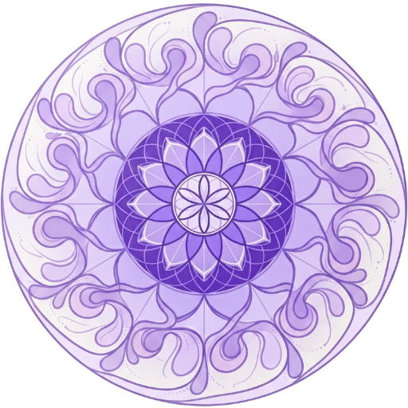

Az ikonra kattintva a kezdőlapra jutsz.
Reggeli gondolathangolás
A nap első lélegzete. Térj vissza minden reggel egy új gondolatért.
Az ikonra kattintva a kezdőlapra jutsz.
A nap első lélegzete. Térj vissza minden reggel egy új gondolatért.

Tedd ki a telefonod kezdőképernyőjére, hogy reggel könnyen elérhesd.